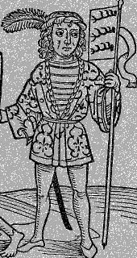

Friday, May the 7th, 2004
back to: title, date or indexes
Many readers, not least the ornithologists among you, will know that birds are commonly covered in feathers. A bird's feathers are replaced periodically during its life through molt. For those of you who do not know what a bird is, let me tell you: it is a bipedal, warm-blooded, egg-laying vertebrate characterized primarily by feathers, forelimbs modified as wings, and hollow bones. Wings, by the way, are surfaces used to produce an aerodynamic force normal to the direction of motion by travelling in air or another gaseous medium, gas being one of the phases of matter. An ideal gas, or perfect gas, is a hypothetical gas which obeys gas laws exactly. Below is a picture of a man who devoted his life to obeying the Laws of Gas. You will note that he has a feather in his cap. In such ways are all things in this world interlinked.

Hooting Yard recommends Wikipedia